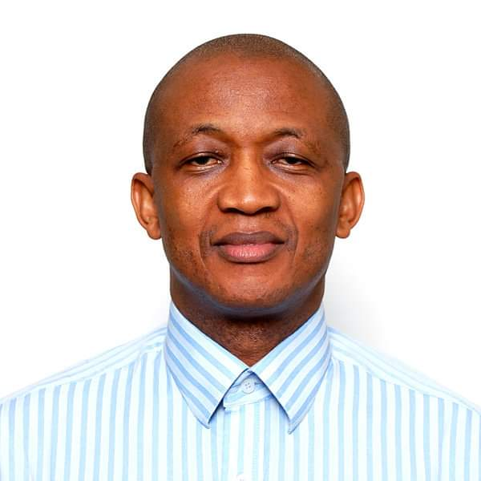

Our Mission
Empowering transformation through innovative management consultancy,
fostering excellence and integrity for a brighter, more equitable future in developing countries.
Our Vision
Becoming a trusted management consulting firm,
advising public and private sectors, SMEs, investors, and Development Partners for impactful and innovative solutions.
Sahr Lahai Jusu
Managing Partner
Founder and Managing Partner of CECAS, holding a Master’s degree in Public Administration from Harvard University and a Master of Arts degree in Economic Policy Management from UN-IDEP in Senegal. As a former Financial Secretary to the government of Sierra Leone, he played a crucial role in economic and financial management policies.
With extensive experience in public sector financial management, he has served in various capacities, including as Director of Public Debt Management at the Ministry of Finance.
Additionally, he has been involved in regional and international committees, such as the World Bank International Development Association Borrower Representative Committee and the ICC Committee on Budget and Finance
Cyprian Kamaray
Senior Partner & Public Financial Management (PFM) Expert
An experienced Chartered Accountant in public financial management, he earned a B.Sc. (Hons) in Economics and a Master of Accountancy (M.Acc) from the University of Sierra Leone and the University of Glasgow, respectively. Serving as Director of Budget and Accountant General for the Government of Sierra Leone,
he later became a PFM Consultant, collaborating with diverse entities, including the African Union, Turks and Caicos Islands Government, Governments of Liberia and Sierra Leone, and multiple Nigerian states and South Sudan.
His expertise spans public sector budgeting, accounting, financial reporting, analysis, and audit/assessment reviews. Proficient in IPSAS, MTEF, and IFMIS implementation, he also has a track record of working with external auditors to address identified weaknesses.

Abdulrahman Bob Conteh
Senior Partner & Development Economist
A Development Economist and Project Management Specialist, he holds a BSc (Hons) in Economics from the University of Sierra Leone, a Master’s degree in social development from the University of Ibadan, Nigeria, and an MBA in Project and Strategic Management from the London College of Accountancy, UK.
With expertise in strategic planning, project development, management, monitoring and evaluation, and analysis for social development, agricultural value chains, and small enterprise projects, he served as the Project Manager for IFAD, coordinating the development and implementation of a comprehensive Monitoring & Evaluation System.
He also managed projects for the EU, updating local development plans, conducting needs assessments, and enhancing Local Council capacities. At UNDP Sierra Leone, he oversaw national projects, ensuring impact monitoring and evaluation through a result-Based Management system for accountability